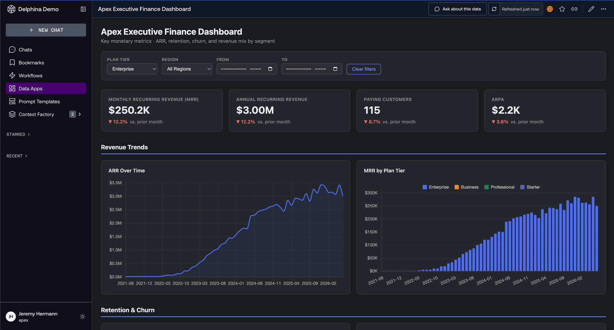
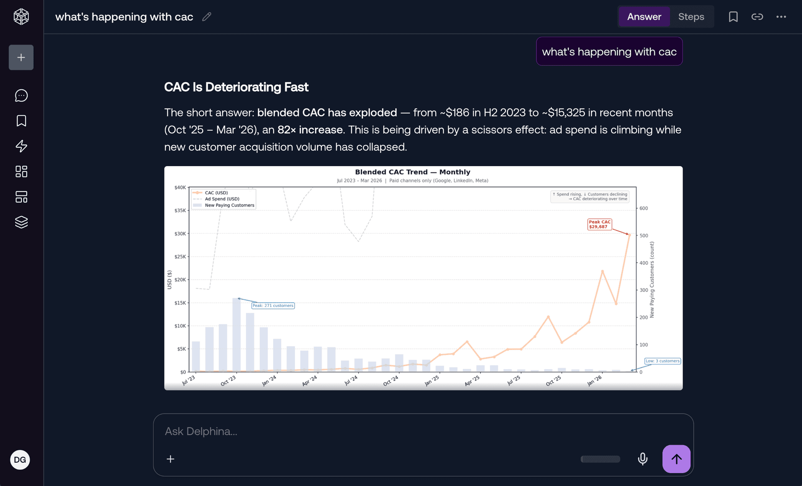
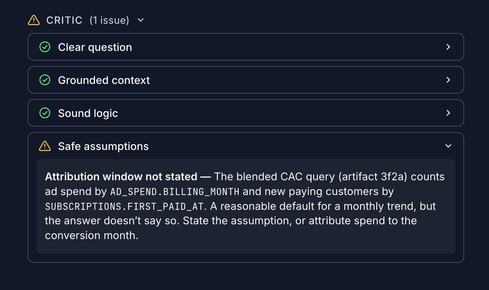
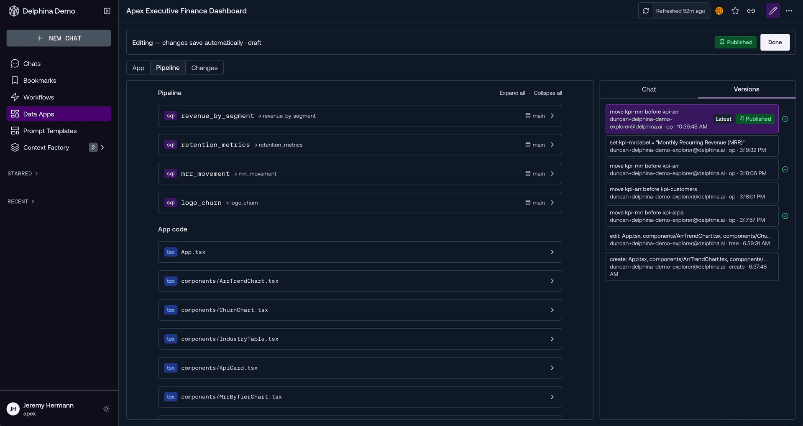
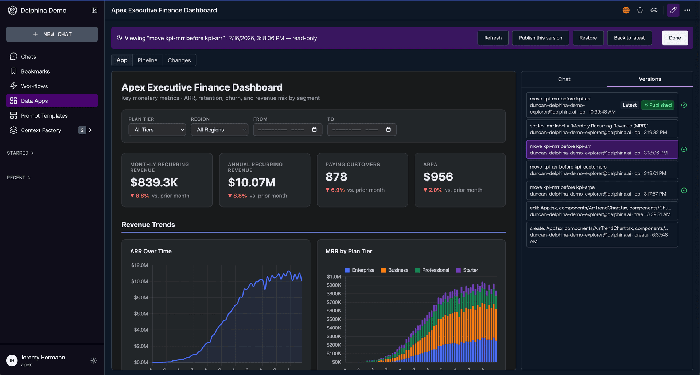
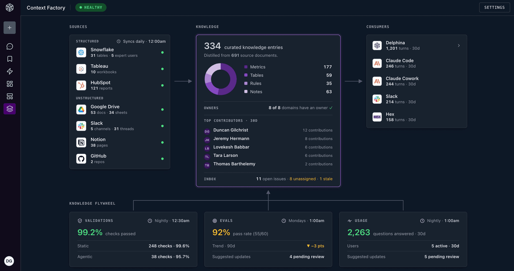

A brain for your warehouse.
Get Insightful wires your sources into one warehouse you own, remembers everything that lands, and turns plain questions into charts, SQL, and answers your agents can use too.

Ships with the full Airbyte OSS catalog: 602 connectors including PostgreSQL, Stripe, Salesforce, Snowflake, and more.
Context for every kind of question.
One store, five shapes. Pick a kind — this is what Get Insightful keeps, where it came from, and who gets to use it.
1,284 entities · parsed from every connector sync · hybrid search on top
“p95 SLA is 150ms for patient-api — latency breaches above that page the on-call.”
proposed by chat · from syncs + 3 conversations · mar 11
“deploy-2214 is owned by the payments squad; rollback is `git revert + redeploy`.”
proposed by chat · from github + slack · mar 9
2 waiting · nothing is applied until someone approves it
landed in your Postgres · typed schemas · read-only from chat and agents
“Rollout order: edge → api → workers. Workers lag on purpose.”
runbook · approved memory · quoted in 41 answers
“Claims-engine latency is measured at the gateway, not the pod.”
domain note · approved memory · quoted in 17 answers
“Weekend deploys need a payments-squad sign-off.”
policy · approved memory · quoted in 6 answers
written down once · every answer cites where it came from
drag, drop, shipped · published walls keep version history
Ask. Answers come with receipts.
Streaming chat plans its work, runs read-only SQL against your warehouse, and shows every tool call on the way. If it claims p95 breached, the query is right there.

Every step visible
Tool calls stream into the transcript. Nothing happens off-screen.
Read-only by default
Chat queries with SELECT. Your sources stay untouched.
Grounded, not guessed
Answers pull from indexed entities and memories you approved.
Nothing sticks without your yes.
As chat learns your stack — thresholds, owners, naming quirks — it proposes memories. They wait in a review feed until you approve them. Nothing is applied silently.

Sync. Real connectors, on a schedule.
Pick a source, enter credentials, set a cadence. Get Insightful executes the actual Airbyte connector — real extraction, real load — and lands typed tables in your Postgres. No sample-data theater.
- 602 sources — the full Airbyte OSS catalog
- Credential forms generated from each connector’s spec
- Live row counts as tables land

Build. Drag, drop, shipped.
Compose dashboards straight from warehouse tables — charts, KPIs, callouts — without a BI stack or a ticket. Publish one and the team opens a link.
- Any table can go on a wall
- Tune the SQL behind every chart
- Version history kept on every publish

Remember. The layer under all of it.
Everything that lands is parsed into entities — services, incidents, alerts, tables — and every conversation can leave behind durable memories. Hybrid search across all of it, refreshed after every sync. Chat, dashboards, and agents read one store.

Entities on arrival
Parsed from every sync and searchable immediately.
Memories with a gate
Proposed in chat, held in review, applied only after you approve.
One store, every surface
Humans, dashboards, and MCP clients query the same context.
Serve. Every agent, same context.
Every instance exposes an MCP server. Point Claude Desktop, Cursor, or your own agents at it — they search the context and query the warehouse with the tools your team uses.
context_search— hybrid search over entities and memoriesrun_sql— read-only SELECTs on the warehouselist_tables— schema discovery for planning
Your data. Your keys. Your machine.
The warehouse is a Postgres you run — one docker compose up. Nothing leaves your machine except the prompts you route to the provider you pick. Bring your own key: Anthropic, or any Anthropic-protocol endpoint, GLM included.
Fair questions.
Is the data real, or a demo simulation?
Where does my data live?
Which AI models does it support?
Can my existing agents and tools use it?
POST :3000/mcp with context_search, run_sql (read-only), and list_tables. Claude Desktop and Cursor work out of the box; there’s also a REST API and an agent guide for authoring dashboards programmatically.What’s the stack?
./run.sh.Give your warehouse a brain.
One script from clone to context. Your sources, your warehouse, your model — and answers that know what happened, and what it meant.